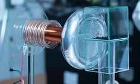

En envases para alimentos
Existen varios nanomateriales disponibles en el mercado que incluyen nanopartículas de nitruro de titanio, nanopartículas de plata y óxido de nano-zinc, nano-arcilla y dióxido de nano-titanio que se presentan como aditivos funcionales para la industria del envasado de alimentos.
El mercado se divide de la siguiente manera
| Embalaje activo | el uso de nanomateriales es beneficioso para interactuar directamente con los alimentos para proporcionar una mejor protección al producto. Algunos nanomateriales como la nano-plata, el dióxido de nano-titanio, el óxido de nano-cobre, los nanotubos de carbono y el óxido de nano-magnesio que pueden proporcionar propiedades antimicrobianas. |
| Embalaje mejorado | Para mejorar la resistencia a la humedad del embalaje, la temperatura y la barrera a los gases, las nanopartículas se combinan con la cadena de polímero y la resistencia a la humedad y a la temperatura del embalaje. |
| Empaquetado inteligente | Esto está diseñado para detectar cambios microbianos o bioquímicos en los alimentos. Puede detectarel desarrollo de patógenos en los alimentos. Algunos envases inteligentes se han desarrollado para usar como un dispositivo de rastreo para la seguridad de los alimentos. |